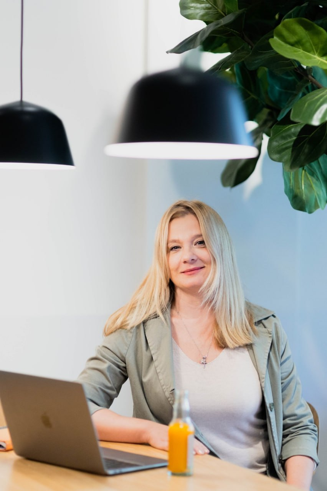
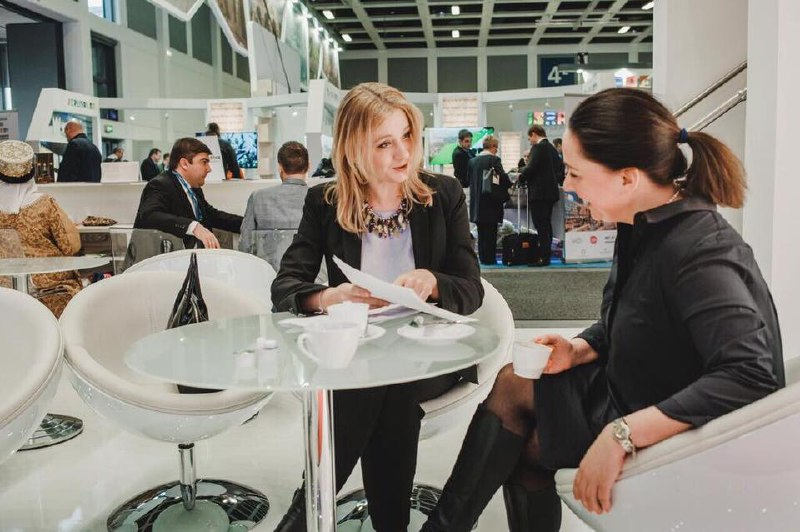
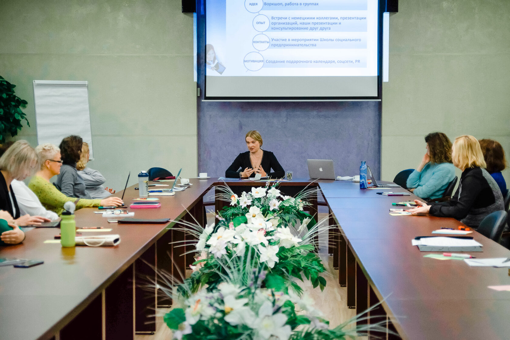
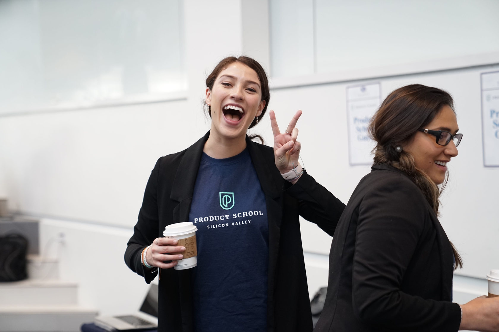

Anna Leonenko
Я помогаю русскоязычным людям в Германии найти свою профессиональную опору через карьерный коучинг, консультации по самозанятости и практическое сопровождение. Ich helfe russischsprachigen Menschen in Deutschland, ihre berufliche Basis zu finden: durch Karriere-Coaching, Beratung zur Selbstständigkeit und praktische Begleitung.
Ко мне приходят, когда внутри много вопросов: куда двигаться дальше, искать работу или открывать самозанятость, как запустить социальный проект и найти на него финансирование, как совместить несколько видов деятельности, написать бизнес-план, да или просто разобраться в бухгалтерии. Я не даю универсальных рецептов. Мы разбираем именно вашу ситуацию: работу, самозанятость, деньги, документы, налоги, клиентов, риски, страхи и первые конкретные шаги. Zu mir kommen Menschen, wenn viele Fragen im Inneren sind: wohin als Nächstes, Arbeit suchen oder selbstständig werden, wie man ein soziales Projekt startet und dafür Förderung findet, wie man mehrere Tätigkeiten verbindet, einen Businessplan schreibt oder einfach die Buchhaltung versteht. Ich gebe keine universellen Rezepte. Wir schauen uns genau Ihre Situation an: Arbeit, Selbstständigkeit, Geld, Unterlagen, Steuern, Kundschaft, Risiken, Ängste und die ersten konkreten Schritte.
Переезд не обнуляет всё, что было до этого. У вас уже есть опыт, образование, идеи и сильные стороны. Мы смотрим, как это можно использовать здесь, что нужно адаптировать под Германию, а где, и правда, начинается новый этап. Ein Umzug setzt nicht alles auf Null, was vorher war. Sie bringen Erfahrung, Bildung, Ideen und Stärken bereits mit. Wir schauen, wie sich das hier nutzen lässt, was an Deutschland angepasst werden muss und wo wirklich ein neuer Abschnitt beginnt.
Мои любимые темы: профессиональная реализация, самозанятость, некоммерческие и творческие проекты, бизнес-планы, помощь с документами для самозанятых, ПМЖ и гражданство. Meine Lieblingsthemen: berufliche Verwirklichung, Selbstständigkeit, gemeinnützige und kreative Projekte, Businesspläne, Hilfe mit Unterlagen für Selbstständige, Niederlassungserlaubnis und Einbürgerung.
Записаться на консультациюBeratung anfragen
Мы не копируем чужие дорожные карты, а собираем вашу: понимаем, где вы сейчас, определяем, куда хотите прийти, и переводим это в стратегию, документы, решения и конкретные шаги.Wir kopieren keine fremden Roadmaps, sondern bauen Ihre: Wir verstehen, wo Sie stehen, bestimmen, wohin Sie wollen, und übersetzen das in Strategie, Unterlagen, Entscheidungen und konkrete Schritte.
Что я предлагаюWas ich anbiete
Стратегическая консультацияStrategische Beratung
Для тех, кому нужно быстро разобраться, как всё устроено и какие варианты есть именно в вашей ситуации. Практический ликбез по самозанятости и смежным вопросам: регистрация, выход из Jobcenter, программы поддержки, некоммерческие проекты, базовый учет и общая логика налоговой системы. Сопровождение в сложных стратегических вопросах тоже начинается с консультации. За 1,5 часа раскладываем всё по полочкам и намечаем следующие шаги.Für alle, die schnell verstehen wollen, wie alles funktioniert und welche Optionen es genau in ihrer Situation gibt. Praktischer Überblick zur Selbstständigkeit und zu angrenzenden Themen: Anmeldung, Ausstieg aus dem Jobcenter, Förderprogramme, gemeinnützige Projekte, Grundlagen der Buchhaltung und die allgemeine Logik des Steuersystems. Auch die Begleitung bei komplexen strategischen Fragen beginnt mit einer Beratung. In 1,5 Stunden ordnen wir alles und legen die nächsten Schritte fest.
СопровождениеBegleitung
Регулярная поддержка для тех, кто уже начал процесс и не хочет разбираться в одиночку. Подходит, если вы оформляете или уже ведете самозанятость, пишете бизнес-план, готовите заявку на проект, ищете финансирование или продумываете следующие шаги. На встречах работаем с конкретными вопросами, которые возникают по ходу. Это формат для движения с опорой и мотивацией: не один большой разбор, а регулярные встречи по мере развития вашей ситуации.Regelmäßige Unterstützung für alle, die den Prozess schon begonnen haben und sich nicht allein durchkämpfen wollen. Passt, wenn Sie sich selbstständig machen oder es bereits sind, einen Businessplan schreiben, einen Projektantrag vorbereiten, Förderung suchen oder die nächsten Schritte durchdenken. In den Treffen arbeiten wir an den konkreten Fragen, die unterwegs auftauchen. Ein Format für Bewegung mit Halt und Motivation: keine einmalige große Analyse, sondern regelmäßige Treffen im Takt Ihrer Entwicklung.
КоучингCoaching
Серия встреч для тех, кому важно разобраться, куда двигаться дальше. Мы анализируем вашу ситуацию, проясняем запрос, выбираем направление, подбираем конкретные шаги, ищем возможности и ресурсы. Подходит, если нужно определиться с профессией, карьерным путем, целями в жизни или сделать важный выбор; возможна работа по лицензированной методике ценностно-ориентированного коучинга.Eine Reihe von Treffen für alle, denen es wichtig ist zu klären, wohin es weitergeht. Wir analysieren Ihre Situation, klären das Anliegen, wählen eine Richtung, legen konkrete Schritte fest und suchen Möglichkeiten und Ressourcen. Passt, wenn Sie sich beruflich, im Karriereweg oder bei Lebenszielen orientieren oder eine wichtige Entscheidung treffen möchten; möglich ist auch die Arbeit nach einer lizenzierten Methode des werteorientierten Coachings.
«Самозанятость в Германии по шагам: от хаоса к ясному плануSelbstständigkeit in Deutschland Schritt für Schritt: vom Chaos zum klaren Plan»
Групповая программа из 9 модулей: как упорядочить идеи, выстроить понятный план, привлекать клиентов и разобраться с организационными и налоговыми вопросами. Понятно, по шагам, на русском языке.Gruppenprogramm aus 9 Modulen: Ideen ordnen, einen klaren Plan aufbauen, Kundschaft gewinnen und organisatorische sowie steuerliche Fragen klären. Verständlich, Schritt für Schritt, auf Russisch.

Обо мнеÜber mich
Я приехала в Германию больше двадцати лет назад уже взрослым человеком: с пятилетней дочерью, дипломом университета и тринадцатилетним профессиональным опытом. Я не хотела начинать жизнь с нуля — и, по большому счёту, не начинала. Я училась адаптировать то, что уже было.Ich bin vor über zwanzig Jahren als erwachsener Mensch nach Deutschland gekommen: mit einer fünfjährigen Tochter, einem Universitätsabschluss und dreizehn Jahren Berufserfahrung. Ich wollte mein Leben nicht bei Null beginnen — und habe es im Grunde auch nicht. Ich habe gelernt, das anzupassen, was schon da war.
На этой основе я построила в Германии карьеру, открыла компанию Mediaost Events und Kommunikation GmbH и инициировала некоммерческую организацию Kultur- und Bildungsprojekte e.V. Много лет я занималась международными культурными, образовательными, социальными и творческими проектами. Со временем мой опыт адаптации, предпринимательства и жизни между культурами перешёл в наставничество, коучинг и консультационную работу.Auf dieser Basis habe ich in Deutschland eine Karriere aufgebaut, die Firma Mediaost Events und Kommunikation GmbH gegründet und den Verein Kultur- und Bildungsprojekte e.V. initiiert. Viele Jahre habe ich internationale kulturelle, bildungsbezogene, soziale und kreative Projekte umgesetzt. Mit der Zeit ist meine eigene Erfahrung aus Anpassung, Unternehmertum und dem Leben zwischen Kulturen in Mentoring, Coaching und Beratung übergegangen.
Сегодня я помогаю другим делать то, что когда-то пришлось делать мне: не обнуляться, а переводить свой опыт, образование, идеи и таланты в новую реальность. И я хорошо понимаю русскоязычных людей в эмиграции — не теоретически, а изнутри.Heute helfe ich anderen, das zu tun, was ich selbst einmal tun musste: sich nicht auf Null zu setzen, sondern Erfahrung, Bildung, Ideen und Talente in eine neue Realität zu übertragen. Und ich verstehe russischsprachige Menschen in der Migration gut — nicht theoretisch, sondern von innen.
Опыт и квалификацияErfahrung & Qualifikation
- M.A. in Kommunikationsmanagement
- специалистка по международным креативным проектам (с 2005)Spezialistin für internationale Kreativprojekte (seit 2005)
- основательница Mediaost Events und Kommunikation GmbH (с 2014)Gründerin der Mediaost Events und Kommunikation GmbH (seit 2014)
- инициаторка Kultur- und Bildungsprojekte e.V. (с 2016)Initiatorin von Kultur- und Bildungsprojekte e.V. (seit 2016)
- экспертка по привлечению финансирования (с 2020)Expertin für Fördermittel-Akquise (seit 2020)
- консультантка по самозанятости и интеграции (с 2021)Beraterin für Selbstständigkeit & Integration (seit 2021)
- карьерный коуч для Jobcenter (с 2022)Karriere-Coach für das Jobcenter (seit 2022)
- сертифицированный системный коуч (с 2023)zertifizierter systemischer Coach (seit 2023)
- преподавательница в программах повышения квалификации (с 2025)Dozentin in Weiterbildungsprogrammen (seit 2025)
- сертифицированная IHK-Ausbilderin / AEVO IHK (с 2026)zertifizierte IHK-Ausbilderin / AEVO IHK (seit 2026)



«Теперь мне всё ясно. Я наконец понимаю, с чего начать и куда иду.»„Jetzt ist mir alles klar. Ich verstehe endlich, womit ich anfange und wohin ich gehe."
Записаться на консультациюBeratung anfragen
Начнём с одной стратегической консультации, а дальше станет ясно, какой путь действительно ваш.Wir starten mit einer strategischen Beratung, danach wird klar, welcher Weg wirklich Ihrer ist.
Подпишитесь на мою группу в Telegram, чтобы не потеряться.Treten Sie meiner Telegram-Gruppe bei, damit Sie nichts verpassen.
QR на мою группу в TelegramQR zu meiner Telegram-Gruppe